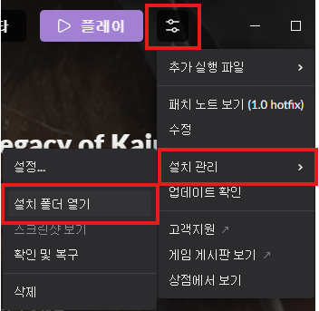
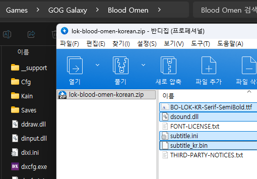
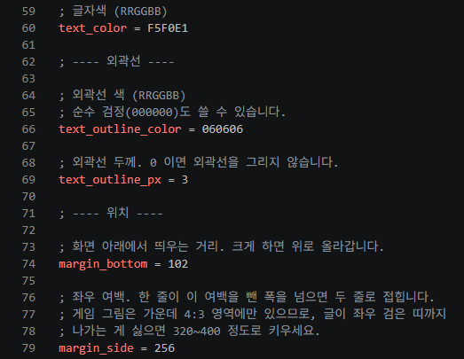

게임 폴더 확인
GOG Galaxy에서 Blood Omen: Legacy of Kain 게임 상세 페이지로 들어가 조절 버튼 - 설치 관리 - 설치 폴더 열기를 눌러 파일 위치를 엽니다.
Korean translation project
블러드 오멘 GOG 버전 한글 패치입니다.
본작은 원래 자막이 없는 게임이나 KainGL에서 영감을 받아 사운드가 재생될 때 자막을 표시합니다.
KainGL과 다르게 그래픽 등 GOG 원본 게임을 변경하지 않고 dll 파일로 사운드 후킹만 합니다.
자막은 폰트 및 크기 등을 설정할 수 있으며 실시간 반영됩니다.
원문의 느낌을 살리기 위해 최대한 직역했습니다.
버그가 있거나 개선할 점은 하단의 의견을 남겨주시면 최대한 반영하겠습니다.
* 블러드 오멘 2는 확인해봤는데 여러가지 문제가 있어 리마스터가 나오기 전에는 한글패치를 만들지 않습니다.

GOG Galaxy에서 Blood Omen: Legacy of Kain 게임 상세 페이지로 들어가 조절 버튼 - 설치 관리 - 설치 폴더 열기를 눌러 파일 위치를 엽니다.

다운로드한 압축 파일을 열어 게임 폴더 내로 복사합니다.

패치 파일 중 subtitle.ini를 메모장으로 편집하여 자막 설정을 할 수 있습니다. 편집하면 실시간 반영됩니다.
font_file: 폰트 파일을 변경할 수 있습니다. *.ttf, *.otf를 지원합니다.
font_px: 폰트 크기를 변경할 수 있습니다.
text_color: 폰트 색상을 변경할 수 있습니다. RRGGBB 16진수 값입니다.
text_outline_color: 폰트 외곽선 색상을 변경할 수 있습니다. RRGGBB 16진수 값입니다.
text_outline_px: 폰트 외곽선 두께를 변경할 수 있습니다.
margin_bottom: 자막 위치를 변경할 수 있습니다. 하단 기준 위로 얼마나 올리냐를 정합니다.
margin_side: 자막 위치를 변경할 수 있습니다. 좌우 기준 양 옆으로 얼마나 좁히냐를 정합니다.
bg_color: 자막 박스 배경색 색상을 변경할 수 있습니다. RRGGBBAA 16진수 값입니다.
bg_pad_x: 자막 박스 크기를 변경할 수 있습니다. 글자 양 끝 기준으로 얼마나 좌우를 넓히냐를 정합니다.
bg_pad_y: 자막 박스 크기를 변경할 수 있습니다. 글자 양 끝 기준으로 얼마나 상하를 넓히냐를 정합니다.
게임 폴더에서 다음 파일을 삭제합니다.
BO-LOK-KR-Serif-SemiBold.ttf: 폰트
dsound.dll: 게임 사운드 후킹 DLL
subtitle_kr.bin: 자막
subtitle.ini: 자막 설정
FONT-LICENSE.txt: 폰트 라이선스
THIRD-PARTY-NOTICES.txt: 서드 파티 고지
| 공개일 | 변경 내역 |
|---|---|
| 2026-09-30 | 최초 공개 |
Feedback
어색한 표현, 오역, 버그, 제안을 남겨주시면 확인 후 반영하겠습니다.